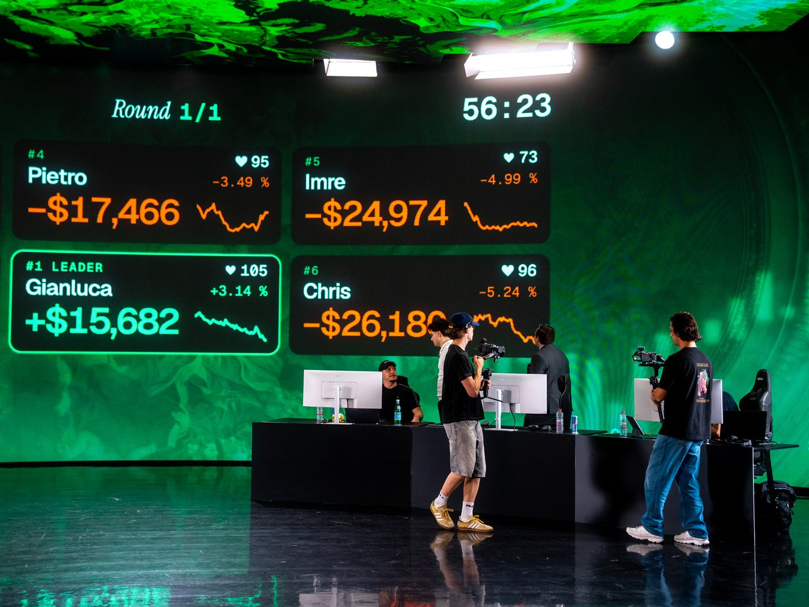
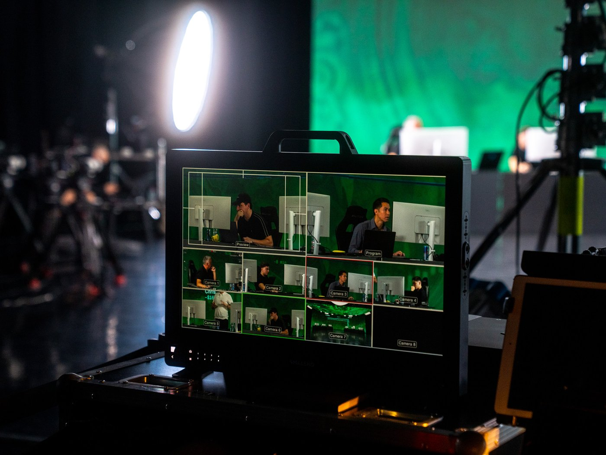
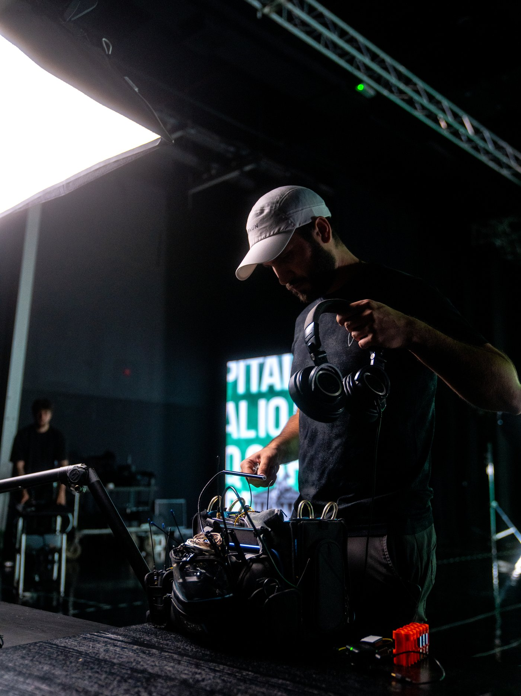
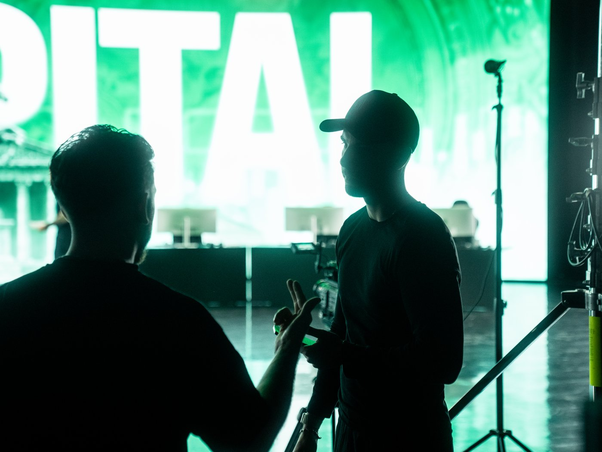

(Case 02) Live-Produktion
Live Trading Showdown
Sechs Trader live, zwei Kommentatoren, zwölf Kameras, zwei 15 Meter lange LED-Wände und ein Echtzeit-Dashboard mit Herzfrequenzen. Vom Konzept bis zur Ausstrahlung in 120 Stunden.

Die Aufgabe
Live-Trading zur Show machen, der man in Echtzeit folgen kann — wer führt, wer unter Druck steht und was das mit dem Puls macht.
Was wir gemacht haben
- Showkonzept und Ablaufplan
- Multicam-Setup mit 12 Kameras
- Zwei 15-m-LED-Wände mit Live-Rangliste
- Herzfrequenz-Dashboard in Echtzeit
- Ton für sechs Trader und zwei Kommentatoren



Du planst etwas in der Art?
Projekt starten →